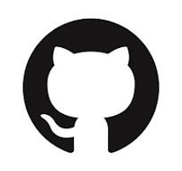
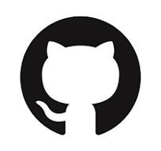

AMMAR BADRAN MOHD NASIR
22012905@sju.ac.kr
+82 10 4487 7710
 

Sejong University, Seoul, South Korea
EDUCATION
Foundation in Computer Science CGPA: 3.5/4.0 (87.50%)
Malaysian Institute of Information Technology (UniKL MIIT), Kuala Lumpur, Malaysia
Department of Computer Science
Final Year Project: Clock Application on JAVA.
PROFESSIONAL EXPERIENCE
- [FEB 2022 - present] International Student, Department of Software, Sejong University, Seoul, South
Korea.
- Managing Professor’s projects requirements and accomplishments.
- Learning Korean, Korea's culture and software-related subjects.
- Research of deep learning in snake game during 1st year.
TECHNICAL SKILLS
- Programming and development skills
- Python (Numpy, Matplotlib, PyTorch)
- Modern language (HTML)
- JAVA (JFrame, GUI)
- C, C++
- Language Learnt
- Bahasa Melayu (mother tongue)
- English (2nd language)
- Korean (Intermediate)
- Research writing and visualization
- Microsoft Word, PowerPoint, Microsoft Excel, Hancom
- Python (Virtual environment)
- Ruby (jekyll, Liquid)
modided html file